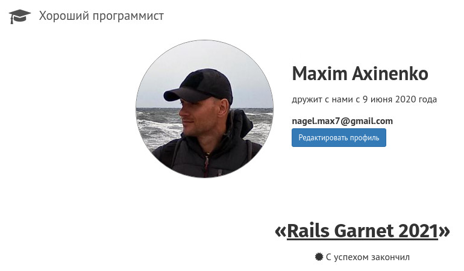

О себе:
Привет, меня зовут Максим, я начинающий Ruby on Rails разработчик. Сменил деятельность в военной сфере - в направлении своих интересов (веб-разработка). Планомерно накапливаю опыт в этой области:
Успешно мощный пятимесячный интенсив по Ruby on Rails от GoodProgrammer.ru

В настоящий момент продолжаю наработку навыков в коммерческом проекте.
Мне нравится, что используя фреймворк RoR c его экосистемой, и некоторые знания из смежных областей, можно в обозримые сроки создать полноценный продукт.
Некоторые применимые личные качества, развившиеся в период прежней деятельности:
- ответственность, умение работать и взаимодействовать в команде; стремление качественно выполнять свою роль;
- выраженная потребность в успешном выполнении полученной задачи;
- положительно отношусь к замечаниям, с интересом — к новому
1982 г.р., Россия, г.Оренбург
Релевантный опыт
[март 2022г - настоящее время]
OOO "Полигон", г. Санкт-Петербург
Тип проекта: интернет-магазин, тип товара: электрооборудование
Стек технологий:
- Ruby v. 2.5
- Ruby on Rails v. 5.2
- MySQL
- SOLR, Sunspot (для поиска)
- Sidekiq, Redis (для фоновых задач)
- Mina (для деплоя)
Функции на проекте:
Поддержка проекта (Исправление ошибок, разработка нового функционала, деплой)
Примеры/характер задач:
- Реализация поддержки отдельных валют в приложении (CNY, TRY). (Добавление обновляемых ежедневно курсов для данных валют, с учетом номинала. Пересчёт цен в рубли для каждого типа прайса, визуализация курсов валют и цен по всем прайсам, для каждого товара - в панели админстратора;
- Добавление товарам нижних и верхних стикеров, для всех разделов и секций в которых есть изображение товара. (Реализация логики отображения разных типов стикеров, расчёта отображаемой на стикере скидки, создание панели настроек стикеров для администратора, - с возможностью их центрального включения/отключения, назначения/хранения цветовых схем, прозрачности, минимального порога скидки; вёрстка адаптивных стикеров);
- Добавление элементов интерфейса с различной функциональностью – в общих разделах сайта и в панели администратора;
- Защита от спама;
- Багфикс, в том числе по следам обновления Ruby on Rails v4.2.5 --> v5.2.1;
[март 2021г - март 2022г]
В период прохождения курса от GoodProgrammer и самостоятельного обучения получил опыт работы со следующими технологиями и инструментами:
Ruby, Ruby on Rails
Создание Ruby-приложений с соблюдением принципов ООП. Разработка c использованием фреймворка Ruby on Rails (REST, MVC). Дебаг и отладка с помощью irb и byebug
Тестирование с RSpec, FactoryBot, Capybara
Писал тесты, понимаю для чего нужны, особенно в сложных системах, при внедрении новых функциональностей
Скрейпинг веб-сайтов с Nokogiri, OpenURI
(может быть довольно увлекательным занятием)
Загрузка файлов с Carrierwave, Rmagick
Отправка почты с Mailjet
(На локальном окружении использовал Letter Opener, чтобы не отправлять письма случайным людям)
Локализация приложения с i18n
Фронтенд: HTML, CSS, JS, Bootstrap, Webpack
Основываясь на своём клиентском опыте, считаю что "фасад" приложения во-многом формирует впечатление о бренде у клиента. Поэтому не склонен недооценивать эту часть разработки.
Работа с базами данных: SQLite, PostgreSQL
Деплой приложений на Heroku, Amazon web services(EC2), и обычном VPS хостинге
(nginx + Phusion Passenger, Capistrano)
Git, GitHub
RVM, Bundler
Проекты
Несколько моих учебных проектов, для примера:
<Ruby-on-Rails>
<Ruby>